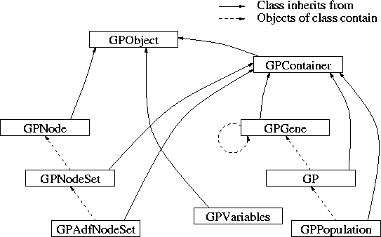
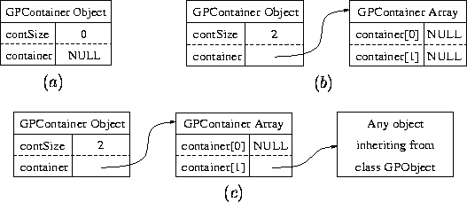

Copyright (C) 1997 Thomas Weinbrenner (thomasw@emk.e-technik.th-darmstadt.de) Copyright Licence: GNU General Public Licence
This section documents the Genetic Programming kernel. It is written in C++ and based upon version 0.4 of gpc++ by Adam Fraser. The GP kernel is a C++ class library that can be used to apply genetic programming techniques to all kinds of problems. An integral component is the ability to produce automatically defined functions as found in Koza's "Genetic Programming II". It has been extensively modified and is now a safe and widely usable tool for a wide range of problems that make use of the Genetic Programming technique.
The software package comes as a library and defines several classes with a certain hierarchy. The software makes use of the object oriented programming scheme, therefore it need not be modified to adapt the system to a specific problem. This is done by inheriting classes and providing the appropriate virtual functions. These are the features:
To understand how the library works, it is important for the user to read Section section 1.2 The Class Hierarchy and section 1.3 Underlying Class definitions. The first deals with the hierarchy of all defined classes, and the second with the two important base classes GPObject and GPContainer.
This library is free software; you can redistribute it and/or modify it under the terms of the GNU General Public License as published by the Free Software Foundation; either version 1, or (at your option) any later version.
This library is distributed in the hope that it will be useful, but without any warranty; without even the implied warranty of merchantability or fitness for a particular purpose. See the GNU General Public License for more details.
You should have received a copy of the GNU General Public License along with this software; if not, write to the Free Software Foundation, Inc., 675 Mass Ave, Cambridge, MA 02139, USA.
The class hierarchy used for the Genetic Programming system is based upon the abstract class GPObject. All classes inherit directly or indirectly from this class. A very important class is GPContainer as it implements a container that is used for nearly all other classes. The classes GPNode, GPNodeSet and GPAdfNodeSet are used to describe the functions and terminals for the population. The classes GPGene, GP and GPPopulation implement the genetic tree structure, the description of a genetic program and of a whole population. The class GPVariables is separate; it is used to hold important configuration variables for the population.
The figure illustrates inheritance hierarchy and shows the type of object the classes contain. For example: GPNode, GPContainer and GPVariables inherit from class GPObject, all other classes inherit from GPContainer. A population contains genetic programs, a genetic program contains one or more genetic trees (the main tree and the ADFs) represented by the root gene, and a gene contains its children, if any.

The classes GPNode, GPNodeSet and GPAdfNodeSet describe a single node, e.g. a function or terminal, a set of nodes that is used to collect all nodes used for a genetic tree (for example the main genetic program or any ADF), and a set of node sets for each genetic tree respectively. The user creates one object of type GPAdfNodeSet and puts all the necessary node sets in it before he creates the initial population. This object should not be altered during the evolution process. This is not really a restriction. If the user alters the object, he must make sure that those nodes (functions and terminals) still needed by the population object are not deleted.
The base class for all classes is GPObject. It is an abstract class, e.g. an object of type GPObject cannot be created.
class GPObject
{
public:
GPObject () {}
virtual ~GPObject () {}
...
};
The container class GPContainer holds objects of type GPObject or of an inherited class. The class "owns" other objects and is responsible for deleting them if the container itself is deleted. Therefore, the destructor defined in GPObject is virtual. This enables the container to call the correct destructor function on deleting any object in the container.
GPObject (const GPObject&) {}
virtual GPObject& duplicate ()=0;
If a container must make a copy of itself (for example if the copy constructor of class GPContainer is invoked), the container needs to copy all members that are in the container. This again is achieved by a virtual function called duplicate(). Every class inheriting from GPObject has to define this function. Usually the function code simply calls the copy constructor of the own class.
virtual void printOn (ostream& os)=0;
Each object should be able to print itself on a stream. This is done by
the virtual function printOn(). By doing this, the output
operator << is defined only once for all objects inheriting in
any way from GPObject.
The container class GPContainer holds objects of type GPObject or of an inherited class. It is a very simple implementation of a set. The class is supposed to provide for handling of other objects and is needed as base class by nearly all other classes as they are almost all containers. Each container manages the objects it owns by allocating an array of pointers that point to these objects. This array is of fixed length which turned out to be quite sufficient.
class GPContainer : public GPObject
{
public:
GPContainer ();
GPContainer (int numObjects);
virtual ~GPContainer ();
...
};
The constructor without parameters sets the object's variables to a default value. The constructor with the number of objects that are to fit in the container as a parameter allocates the array of pointers and sets each pointer to NULL. The destructor deletes all objects the container owns and then the array of pointers.
GPContainer (const GPContainer& gpc);
virtual GPObject& duplicate () {
return *(new GPContainer(*this)); }
The copy constructor makes a copy of another container. First it allocates the array of pointers, if there are any, and then all objects in the original container are duplicated by means of the virtual function duplicate() declared in class GPObject. This is the reason why every class has to implement the function duplicate(), because the container must be able to make a copy of each object. Usually, the function duplicate() makes a copy (in this case, of a complete container) by allocating a new object with the copy constructor.
Note: the copy constructors of inheriting classes have not only to copy the elements of the own class, but also have to call the copy constructor of the container class. The copy constructor of class X inheriting from GPContainer should look like this:
X (const X& x) : GPContainer(x) { ... }
This ensures that the copy constructor of class GPContainer is invoked which is necessary to copy all the container objects of an instantiated class X object.
void reserveSpace (int numObjects);
int containerSize() const { return contSize; }
If a GPContainer object was created with the parameterless constructor, there must be a way to set up the actual container size and allocate the array of pointers. The function reserveSpace() can be called in this case. It should not be called to resize the container which is in any case not possible.
The container size is returned by the function containerSize(). This function is very important and widely used. Nearly every class of the Genetic Programming system is inherited from GPContainer. The class that represents the tree structure (GPGene), for example, uses containerSize() to determine the number of children.
GPObject* Nth (int n) const;
There are a few functions that serve as means of modifying the container's content or obtaining information. All functions that exist within the container class check for the range of any arguments and stop the program if this is out of range. One of the benefits of object oriented programming is that it can save a lot of code. Classes that inherit from GPContainer do not need to check for this kind of error.
Nth() returns the n-th object in the container. The classes that inherit from GPContainer also need a function that returns elements from the container, but they certainly want the function to return a type of the inherited class and not GPObject. Some compilers do not allow for virtual functions returning different types yet. Therefore, different function names are used in the inheriting classes. Those functions invoke GPContainer::Nth() and do the necessary type conversion.
void put (int n, GPObject& gpo); GPObject& get (int n); GPObject** getPointerAddress (int n) const;
The functions put() and get() change the responsibility for an object's destruction. If the container owns an object, it will destroy it whenever the container is destroyed. The figure explains what happens when a container is created, space is reserved, and any object is put into the container.
Figure: A GPContainer object (a) after creation with the parameterless constructor, (b) after calling reserveSpace(2), and (c) after putting another object into the container at position 1
virtual void printOn (ostream& os);
getPointerAdress() returns a pointer to the pointer within the array of pointers. This way it is possible to modify, for example, the structure of a genetic tree by merely changing the pointers. The function makes crossover as well as shrink mutation very fast and easy. However, care has to be taken not to leave objects undeleted (the so-called memory leaks) nor to disrupt internal structures.
A container also provides a simple print function: it calls the printOn() function of every object it contains. This function is usually overwritten by the inheriting classes.
A genetic program consists of a tree structure. Each node within the tree has certain properties. It can be either a function, which has parameters, or a terminal. By definition the difference between a function and terminal is that a terminal has no arguments. One could also say a terminal is a function with no arguments. Indeed they are so similar that a distinction that leads to different classes is not necessary. Both types are referred to as nodes throughout the report.
The class GPNode is used to describe the properties of a node. The class is not used to represent the tree structure of a genetic program (See section 1.7 The Gene, class GPGene). The classes GPNode, GPNodeSet and GPAdfNodeSet are only used to describe the properties of the functions and terminals for later populations.
class GPNode : public GPObject
{
public:
GPNode (int nVal, char* str, int args=0) : nodeValue(nVal),
numOfArgs(args) { representation=copyString (str); }
virtual ~GPNode () { delete [] representation; }
...
};
The constructor defines a node and receives an identification parameter of type integer and a string which is used for output. The class makes a copy of this string. To define a function, a third parameter, namely the number of arguments the function has, is given to the constructor. The identification value must be unique for a node set (See section 1.4.2 Sets of Nodes).
int value () { return nodeValue; }
int isFunction () { return numOfArgs!=0; }
int isTerminal () { return numOfArgs==0; }
int arguments () { return numOfArgs; }
virtual void printOn (ostream& os) { os << representation; }
These functions are self-explanatory and return information about the node. The function printOn() prints the representation string.
protected: char copyString (char *str); int nodeValue; int numOfArgs; char* representation;
These components are protected and not accessible from outside the class scope. copyString() allocates memory with the new operator and makes a copy of the given string.
Each genetic tree has its own function and terminal set. For this purpose, the class GPNodeSet is introduced and serves as a container to hold all the different nodes.
During the creation process of the population, the class has to choose a node either from the terminals or the functions. To increase efficiency, the class puts functions at the beginning and terminals at the end of the container. Therefore, the function put() must not be used to manually put nodes in the container, the function putNode() should be used. This also increases ease of use.
class GPNodeSet : public GPContainer
{
public:
GPNodeSet (int numOfNodes) : GPContainer (numOfNodes) {
numFunctions=0; numTerminals=0; }
...
};
During the process of placing nodes in the container, two variables are used which are initialised by the constructors. These count the number of functions and terminals that are put in the container.
virtual void put (int, GPObject&); virtual void putNode (GPNode& gpo);
As mentioned above, the function putNode() puts functions at the beginning and terminals at the end of the container. If the user tries to call the function put(), the whole process gets mixed up. The function put() is defined in the class and exits with an error message if it is called. The identification values of the nodes must be distinguishable for a node set (See section 1.4.1 Class GPNode). This is checked by the function putNode().
virtual void printOn (ostream& os);
printOn() prints out the complete node set. For each node, it prints out the node, and if the node is a function, parenthesis around the number of arguments of the function.
virtual GPNode* searchForNode (int value);
GPNode* NthNode (int n) {
return (GPNode*) GPContainer::Nth (n); }
Function searchForNode() scans through a node set and tries to find a node with the given identification value. It returns the address of the node. If no node is found, NULL is returned. NthNode() returns the node with index n of the container.
virtual GPNode& chooseFunction(); virtual GPNode& chooseTerminal(); virtual GPNode* chooseNodeWithArgs (int args);
The first two functions are used during the creation process and choose either a function or a terminal from the node set. They do this by random and are virtual functions in case the user wants to, for example, impose restrictions on the selection. To perform swap mutation, the mutation function exchanges a node with another node from the node set but with the same number of arguments. chooseNodeWithArgs() scans through the node set, counts the nodes with the appropriate number of arguments and selects one of them by random. If none is found, chooseNodeWithArgs() returns NULL.
protected: int numFunctions, numTerminals;
These variables are used to distinguish between functions and terminals
within the container. The container contains functions from index
[0...numFunctions] and terminals from index
[containerSize()-numTerminals...containerSize()]
(last index exclusive).
A genetic program consists of the main tree and the ADF trees. Each tree type can have different function and terminal sets. This allows the user to introduce a priori knowledge of the task to be performed by the genetic program. To ensure easy handling and to prevent mistakes in accessing the sets, the container class GPAdfNodeSet is used to collect the node sets together rather than using an array which is not foolproof. The container size of such an object determines the number of ADFs the user wants to use.
class GPAdfNodeSet : public GPContainer
{
public:
GPAdfNodeSet () {}
GPAdfNodeSet (int numOfTrees) : GPContainer(numOfTrees) {}
virtual void printOn (ostream& os);
GPNodeSet* NthNodeSet (int n) {
return (GPNodeSet*) GPContainer::Nth (n); }
...
};
The class declaration is very short as it differs only slightly from an ordinary container class. Remember that if the parameterless constructor is used the container size can be set later with the function reserveSpace(). The function printOn() prints the number of the tree and the corresponding node set for each tree. NthNodeSet(n) returns a reference to the node set with index n.
Before a population can be created, the functions and terminals have to be defined. This is very easy using the classes GPNode, GPNodeSet, and GPAdfNodeSet. First the container for all node sets must be declared.
GPAdfNodeSet adfNs;
Then space is reserved for the node sets (in this example one for the main tree and one ADF tree). This code determines the number of ADF trees the genetic programs have, because the creation process uses all node sets in this container, and creates the same number of trees.
adfNs.reserveSpace (2);
Now the node sets for each tree are allocated and put into the container of the adfNs object. Each node set constructor is passed the correct number of nodes the container will hold:
GPNodeSet& mainTree=*new GPNodeSet (6); GPNodeSet& adf0Tree=*new GPNodeSet (4); adfNs.put (0, mainTree); adfNs.put (1, adf0Tree);
The last step is to define the functions and terminals and put them into the node sets. The identification values for the nodes are of type integer, but can be characters which are more descriptive. This example is taken from the symbolic regression program and defines the following nodes:
+,-,*,/,ADF0(x1,x2)
x
+,-
x1,x2
mainTree.putNode (*new GPNode ('+', "+", 2));
mainTree.putNode (*new GPNode ('-', "-", 2));
mainTree.putNode (*new GPNode ('*', "*", 2));
mainTree.putNode (*new GPNode ('%', "%", 2));
mainTree.putNode (*new GPNode ('A', "ADF0", 2));
mainTree.putNode (*new GPNode ('X', "x"));
adf0Tree.putNode (*new GPNode ('+', "+", 2));
adf0Tree.putNode (*new GPNode ('*', "*", 2));
adf0Tree.putNode (*new GPNode (1, "x1"));
adf0Tree.putNode (*new GPNode (2, "x2"));
A GPPopulation object is a container that contains all the genetic programs of a population.
class GPPopulation : public GPContainer
{
public:
GPPopulation (GPVariables& GPVar_, GPAdfNodeSet& adfNs_) :
adfNs(&adfNs_), GPVar(GPVar_) {}
...
};
The above constructor is usually used to create a new population. That does not mean that the genetic programs are created at this point, not even the container space is reserved. This is done later when a new generation is created. The class needs some configuration variables (a GPVariables object, See section 1.8 Configuration Variables) which are used throughout the member functions of the class, and a container with the node sets for each genetic tree. The node sets are saved in the population object as a reference; that means that the node set objects must not be destroyed as long as the population exists.
virtual void create ();
virtual GP* createGP (int numOfTrees) { return new GP (numOfTrees); }
virtual int checkForValidCreation (GP& gpo);
The function create() reserves space for the genetic programs in the object's container. Then it loops through the whole population. It creates genetic programs which are still empty by calling the function createGP(), then calls the function GP::create() (See section 1.6 The Genetic Program) for each genetic program with the appropriate parameters to create the trees.
Once a genetic program has been created, the function checkForValidCreation() is called to check for a valid genetic program. This function can reject any genetic program. This does not necessarily lead to an infinite loop. After a certain amount of trials, the function create() accepts the last one even if checkForValidCreation() returns the value 0 (which means the genetic program is not valid). In the current implementation, the function checks whether the genetic program was already created before, and rejects those genetic programs to ensure ultimate diversity. A rejection is likely to happen when small tree depths, few different nodes and large populations are used.
double totalFitness ();
long totalLength ();
long totalDepth ();
GP* NthGP (int n) { return (GP*) GPContainer::Nth (n); }
virtual void printOn (ostream& os);
virtual void createGenerationReport (int printLegend, int generation,
ostream& fout, ostream& bout);
The first three routines loop through the complete population and sum all the appropriate values of the genetic programs together. They are used for statistical purposes. The function NthGP() returns the n-th genetic program of the population. The function printOn() prints all the genetic programs of the population, and createGenerationReport() reports some statistical parameters about the population.
virtual void generate (GPPopulation& newPop); GPContainer* evolution (GPPopulationRange& range); virtual void demeticMigration (); virtual void calculateStatistics (); virtual void evaluate();
The function generate() builds up a new population by applying the genetic operators creation, reproduction, selection, crossover and mutation. The following actions are taken:
The function evolution() creates objects for the new generation. The configuration parameters CreationProbability and CrossoverProbability (See section 1.8 Configuration Variables) determine whether a genetic programs is created anew, two parents are crossed or one is selected for reproduction. One should be aware that for each crossover two children are created (Assuming the appropriate kernel functions are not overwritten). A crossover probability of 50% (CreationProbability=0) therefore leads statistically to more than 50% members of the new population resulting from crossover. The structure GPPopulationRange defines the range of the population that the selection process works on. Also, a flag named firstSelectionPerDeme resides here and is used by the probabilistic selection function to set up variables that speed up further selections.
If demes are used, the population is split into parts of equal size, and each deme is treated the same as the whole population would be treated without using demes. Demetic migration means that for every deme of a population a genetic program is selected by using the usual selection scheme and exchanged with a similarly selected program from the next deme. The probability of an exchange is determined by the configuration parameter DemeticMigProbability.
virtual GPContainer* select (int numToSelect,
GPPopulationRange& range);
virtual GPContainer* selectParents (GPPopulationRange& range);
virtual void selectIndices (int *selection, int numToSelect,
int selectWorst, GPPopulationRange& range);
virtual void tournamentSelection (int *selection,
int numToSelect, int selectWorst, GPPopulationRange& range);
virtual void probabilisticSelection (int *selection,
int numToSelect, int selectWorst, GPPopulationRange& range);
The selection of genetic programs is important for reproduction and crossover. The function evolution() calls select() to select one genetic program for reproduction, and selectParents() to select two parents for crossover from a given range of the population. The range is either the range of a deme, if demes are used, or of the whole population. Both functions call selectIndices() to receive an array of indices (parameter selection) which refer to the selected genetic programs. This function calls either tournamentSelection() or probabilisticSelection() depending on the selection type set in the configuration variables. The functions can either return the best ones that were selected or the worst (used for steady state to replace the genetic programs with bad fitness by those with good fitness). The number of genetic programs to select must be either one or two.
The crossover process works only for two parents so far. If other crossover mechanisms are to be used with more than two parents, not only the crossover function GP::cross() has to be changed, but also the functions that have to select the parents (selectParents(), tournamentSelection() and probabilisticSelection()).
int bestOfPopulation, worstOfPopulation; protected: GPAdfNodeSet* adfNs; GPVariables GPVar; double avgFitness, avgLength, avgDepth;
bestOfPopulation and worstOfPopulation are indices to the best and worst member of a population. The indices are valid only after calculateStatistics() has been called (done after the creation of the new generation and after a new generation has been evolved by generate()). adfNs is a pointer to the node set container, and GPVar are the configuration variables for the population. The other variables are used for statistical purposes.
A genetic program consists of a main tree and the ADF trees (if any). Class GP is inherited from GPContainer and contains the root gene of each tree.
class GP : public GPContainer
{
public:
GP (int trees) : GPContainer (trees) { fitnessValid=0;
GPlength=0; GPdepth=0; }
...
};
To create a genetic program, the constructor has to be called with the correct number of trees.
virtual void create (enum GPCreationType ctype, int allowabledepth,
GPAdfNodeSet& adfNs);
virtual GPGene* createGene (GPNode& gpo) { return new GPGene (gpo); }
virtual int compare (GP& gp);
The function create() creates a genetic program. First, it creates the root genes of the trees and puts them into the container of the genetic program. The root genes are always functions. Then it creates the trees by calling the function create() for each root gene. Normally each tree has a different node set. They are extracted from the variable adfNs which is a container the same size as the genetic program. A mismatch will result in an error (See section 1.10.1 Error Handling). The allowed creation types are either GPGrow or GPVariable, all other creation types influence only the allowable tree depth.
If the user wants to establish his own gene class, he wants his own class objects created during the creation process. The virtual function createGene() is used to create the root genes of the trees. The user has to overwrite it to create his own objects. The same has to be done for the class GPGene, where a similar function named createChild() is used to create the children of a gene.
The function compare() is used to compare two genetic programs with each other and can be used to ensure diversity during the creation process.
virtual GPContainer& cross (GPContainer* parents,
int maxdepthforcrossover);
void shrinkMutation ();
void swapMutation (GPAdfNodeSet& adfNs);
virtual void mutate (GPVariables& GPVar, GPAdfNodeSet& adfNs);
virtual void evaluate ();
Crossover is one of the most important genetic operations. It crosses the parents belonging to a container defined as a parameter. A container with children is returned. If the user overwrites the function and allocates another container, the passed container must be deleted. The number of parents is determined by the function generate() of class GPPopulation and must be two for this implementation to work. The number of children can be any value (including zero! Note that if no child is returned every time the function cross() is called, an infinite loop will occur), but is in this implementation always two. In crossover, a random number determines which trees of the parents are crossed, for example, the main trees, ADF0 trees etc. From these trees, two cut points are chosen and the whole subtrees are swapped. If the depth of one or both the resulting tree is larger than the configuration parameter MaximumDepthForCrossover, the subtrees are swapped back and another cut point is chosen. A fixed maximum amount of trials will be carried out until the tree size of the children is acceptable.
The function mutate() determines whether a mutation should take place, depending on the probability given in the appropriate parameters of the class GPVariables variable. The mutation operation can be defined in several ways. This implementation performs swap and shrink mutation. Function swapMutation() exchanges a node by another node randomly chosen from the node set. Only nodes with the same number of arguments are swapped. Function shrinkMutation() chooses a function gene (e.g. a gene which has children), then one of its children. The chosen child takes the place of the parent, and the parent and all other children are deleted.
The selection of genetic programs is based upon assessing the genetic programs in some way. This depends on the problem the user wants to solve. The function evaluate() must therefore be written by the user. It has to calculate the standardised fitness (See Koza's book) of the genetic program and put the result in the member variable stdFitness. The standardised fitness is a positive value where smaller values denotes a better fitness.
virtual void printOn (ostream& os);
The print function prints out all trees the genetic program contains.
double getFitness () { return stdFitness; }
virtual int length () { return GPlength; }
virtual int depth () { return GPdepth; }
virtual void calcLength ();
virtual void calcDepth ();
GPGene* NthGene (int n) { return (GPGene*) GPContainer::Nth(n); }
These functions return information about the genetic program. The length and depth of a genetic program is defined as the sum of the length and depth of all trees. These values are needed more than once within the library. To calculate them repeatedly leads to an impact on program efficiency as all the trees have to be parsed. To save calculation time, the values are saved in the object. That means that the functions calcLength() and calcDepth() have to be called whenever the length and depth of a genetic program might change (for example, for crossover, but not swap mutation).
protected: int fitnessValid; double stdFitness; int GPlength, GPdepth;
The variable stdFitness is the standardised fitness (positive numbers, and 0.0 is best) of the genetic program. The fitness does not change when a program is reproduced. To save computational power, a flag determines whether the fitness of the GP object is already calculated or not. The flag must be set to 0 by any operation that changes the genetic program (for example, the crossover and mutation), but not by reproduction. The length and depth of a genetic program are also saved.
Genetic Programming uses tree structures to internally store genetic programs. A tree consists of genes, each of which can be the parent gene for one or more children. A gene is also a container, so the class GPContainer can be used again. A gene object has only one component: a pointer to an object of class GPNode. By referencing a node object rather than, for example, the node's identification value, several aspects have to be taken into account. The most important argument was that the user might use his own node class with components accessible in this way. To store the complete node object into the gene is certainly not a bad solution, but is not used due to memory considerations. The reference, on the other hand, makes problems when a population has to be saved and loaded again. See section 1.9 Loading and Saving of Populations how this is solved.
class GPGene : public GPContainer
{
public:
GPGene (GPNode& gpo) : node(&gpo), GPContainer(gpo.arguments()) {}
...
};
To create and use a gene object, a node object has to exist. The constructor is called with a reference to the node object, which is saved in the gene object. At the same time, the constructor of the base class GPContainer is called with the number of arguments (or children) the gene requires.
virtual void create (enum GPCreationType ctype, int allowabledepth,
GPNodeSet& ns);
virtual GPGene* createChild (GPNode& gpo) {
return new GPGene (gpo); }
friend int operator == (GPGene& pg1, GPGene& pg2);
virtual int compare (GPGene& g);
The function create() is used to create a complete subtree. It must be called either with GPGrow or GPVariable as creation type. The other creation types that exist (see section 1.8 Configuration Variables for more on the possible creation types) influence only the maximum allowable depth for creation. The function creates the children for the object it was called for and calls itself recursively for each child which is not a terminal, reducing the allowable depth by 1. To build a complete tree, the root tree node must be created, and then this function can be called for that object. The function GP::create() does exactly this.
If the user wants to establish his own gene class, he wants his own class objects created during the creation process. Instead of the constructor, the class GPGene uses the function createChild(), a virtual function, for the creation process. The user can overwrite the function and create any object that belongs to a class inherited from GPGene. A similar function in class GP must also be overwritten.
The compare function compares two trees with each other. It is used during creation to ensure that the created genetic programs are unique.
GPGene** findNthNode (GPGene** rootPtr, int findFunction,
int &iLengthCount);
virtual GPGene** choose (GPGene** rootPtr);
int countFunctions ();
GPGene** chooseFunctionNode (GPGene** rootPtr);
These functions are used for crossover and shrink mutation where a gene has to be selected on each parent tree by random. This is done by function findNthNode(). It must be called with (a) a reference to the pointer to the root gene, (b) a flag indicating whether just functions or both functions and terminals are to be selected, and (c) a reference to a variable containing a (random) number between 0 and one less than the number of selectable genes in the tree. The function parses the tree thereby decrementing the length counter, and returns a reference to the pointer to the found gene. The reason why references to pointers are used is very simple: the crossover operation only has to swap the pointers to perform the crossover. Shrink mutation is also faster.
The function choose() is used for crossover. It selects a point within a genetic tree and returns a reference to a pointer to that node. It uses the function length() to calculate the length of the tree before choosing a random number in the correct range and calling findNthNode().
The function chooseFunctionNode() is used for shrink mutation. It selects a function gene within a genetic tree and returns a reference to a pointer to that node. It uses the function countFunctions() to calculate the number of function of the tree before choosing a random number in the correct range and calling findNthNode(). If no function nodes exists, NULL is returned.
virtual void printOn (ostream& os);
GPGene* NthChild (int n) {
return (GPGene*) GPContainer::Nth (n); }
GPNode& geneNode () { return *node; }
virtual int isFunction () { return node->isFunction (); }
virtual int isTerminal () { return node->isTerminal (); }
virtual int length ();
virtual int depth (int depthSoFar=1);
These functions return information about the gene or a genetic tree. printOn() prints a tree in the typical lisp notation: if the gene is a function, it prints an open parenthesis, the node, all children and a close parenthesis, otherwise only the node. Printing the node means that the function GPNode::printOn() of the node is called.
The function depth() should be called without a parameter. It is recursive and uses its parameter to calculate the depth of the tree.
protected:
union
{
GPNode* node;
int nodeValue;
};
As described above, using a reference to a GPNode object complicates the process of loading and saving a population. It is solved this way: only the identification value of the node is saved. That means that if a gene is loaded again from a stream, it gets only this value back and, to save memory, stores it temporarily at the same location where the pointer resides. Another function described later has to be called after the load process to convert the identification value back to a reference.
This class is used to control the behaviour of several aspects of Genetic Programming. Each population object has an object of this class as a member. In this section, the meaning of all variables will be discussed.
[1..MaxInt])
[0..MaxInt])
[0.0..100.0])
[0.0..100.0])
[0..5])
[2..MaxInt])
[MaximumDepthForCreation..MaxInt])
[0..1])
[1..MaxInt])
[0..1])
[1..PopulationSize])
[0.0..100.0])
[0.0..100.0])
[0.0..100.0])
[0..1])
[0..1])
To save or to load an object seems to be quite simple: one has only to write all member variables to the stream in a way that they can be read later by the complementary load function. Problems arise when a class that owns objects, class GPContainer, has to do the same for all the objects it owns. To save objects is easy: just a virtual function has to be provided. But to load them implies that they are created first.
GPObject* GPCreateRegisteredClassObject (int ID); void GPRegisterClass (GPObject* gpo); void GPRegisterKernelClasses ();
What is often done in such a case is to implement a registration mechanism for all classes that want to participate in the load and save operation. Each class gets a unique identification value that can be obtained by a virtual function every class has to define. Before members of a certain class can be loaded, they must be registered, e.g. an object of the class must be created and function GPRegisterClass() must be called.
The trick is that class GPContainer saves not only the objects it contains, but also their identification value. If they are to be loaded again, function GPCreateRegisteredClassObject() is called which creates a new object of the given identification value. For that, it loops through all the objects that are registered until it finds one that matches the identification value, and calls a virtual function, createObject(), for that object to create a new object of the same class.
During the initialisation process, the kernel calls GPRegisterKernelClasses() to register all kernel classes.
We consider a new class that inherits from GPObject:
const int UserClassID=GPUserID;
class UserClass : public GPObject
{
...
virtual char* load (istream& is);
virtual void save (ostream& os);
virtual int isA () { return UserClassID; }
virtual GPObject* createObject() { return new UserClass; }
...
}
Every class has to define those four virtual functions. load() tries to load objects from a stream, and returns NULL or an error message, if something went wrong. save() simply saves the object to the stream.
isA() returns the identification value of the class. If the user inherits from any kernel class, he has to use different identification values. All values greater or equal than GPUserID can be used for that purpose.
createObject() allocates a new object of the same class by calling a parameterless constructor. Every class should therefore define such a constructor.
As mentioned before, the gene class saves not the pointer to its node information object, but the node identification value. This value is read in from the stream during the load operation and must afterwards be converted again to a pointer to the node. This is done by the following functions.
Similarly, a population object has a pointer to its node set. When a population is saved, this node set is not saved. This object component is therefore not initialised when a population is loaded again, and has to be set manually.
class GPGene : public GPContainer
{
...
void resolveNodeValues (GPNodeSet& ns);
...
}
class GP : public GPContainer
{
...
void resolveNodeValues (GPAdfNodeSet& adfNs);
...
}
class GPPopulation : public GPContainer
{
...
void setNodeSets (GPAdfNodeSet& adfNs_);
...
}
Consider a complete population in pointer variable pop and the appropriate container of the node sets in pointer variable adfNn. To save the population and the node set, simply open a stream and call the function save() for each object.
GPPopulation* pop;
GPAdfNodeSet* adfNs;
...
ofstream savePop ("pop.dat");
adfNs->save (savePop);
pop->save (savePop);
To reload that population, again open a stream, create an empty population and call load() for each the node set and the population. Afterwards, call GPPopulation::setNodeSets() to resolve the pointers to the nodes.
ifstream loadPop ("pop.dat");
pop=new GPPopulation();
adfNs->load (loadPop);
pop->load (loadPop);
pop->setNodeSets (*adfNs);
The Genetic Programming kernel makes a lot of run time checks. Mostly, parameters of functions are checked to make the system safer and to detect errors in the early program development stage. These checks can be suppressed by a compiler switch which then also speeds up execution time.
#define GPINTERNALCHECK 1 #define GPCREATE_SEGMENTATIONFAULT_ON_ERROR 1 void GPExitSystem (char *functionName, char *errorMessage);
If an error is detected, the function GPExitSystem() is called which reports the name of the function where the error was detected and the error message itself, and then exits. If a special compiler switch is on, the program tries to create a segmentation fault so that it is easier to track down the error with a debugger and find out which piece of code really caused the error. This works only on computers and operating systems that are able to detect a segmentation fault. It certainly does not work with MS-DOS!
void GPInit (int printCopyright, long seedRandomGenerator);
Before the Genetic Programming kernel is used, this function should be called once. It prints out a copyright message, if flag printCopyright is true, initialises the random number generator with the value seedRandomGenerator and registers all kernel classes for the load and save operations.
If seedRandomGenerator has the value -1, the random number
generator is initialised with the return value from the system function
time(), otherwise with the given value. This can be very helpful
in the debugging stage where errors must be reproduced: even though
random numbers are used, the program behaviour stays the same.
The Genetic Programming kernel uses its own random number generator mostly due to the fact that the random number generators of many standard C libraries are usually of poor performance with respect to the random numbers that are generated.
void GPsrand (long); long GPrand (); int GPRandomPercent (double percent);
GPsrand() initialises the random number generator. This is
normally done by GPInit(). GPrand() returns a random
number in the range 0..2^31-2. GPRandomPercent() returns
0 or 1, depending on the probability of the parameter percent.
The resolution for percent is 0.0001.
Note: this module will probably be replaced one day by a more sophisticated one.
The module Config defines a class called GPConfiguration and provides an easy and simple to use way to define configuration variables in a .ini file, which are read in by the constructor of this class.
Simply call the constructor of the class with the stream to put any messages on (only for error messages, in case the file is malformed), the name of the file that should be read, and an array of structures GPConfigVarInformation describing the variables. The array must end with a NULL pointer in the structure variable varPtr. The constructor reads the file and puts all the values of the variables he finds in the denoted memory location.
The file format of a configuration file consists of the variable name, the character `=' and the value which can be a string, an integer of a floating point value. Comments are allowed and recognised by lines starting with the character `#'.
Strings are duplicated; space is allocated with new char[] and
should be freed, if no longer used. In case any configuration variable
is of type string, the structure variable varPtr points to a
variable of type (char *). That's a better way than letting the
user provide for the space, because it is not known how long the string
will get.
The structure that describes a configuration variable contains three components: the name of the configuration variable, the type which can be any of DATAINT, DATAFLOAT, DATADOUBLE or DATASTRING, and a pointer to that variable. The structure must be global, because a pointer to the structure is saved in the class object to be used for the print routine as well, and the pointers to the variables must therefore exist as well.
To use this module, include the file gpconfig.h. The definitions are not put into the include file for the Genetic Programming system gp.h, because the user might want to define the configuration differently, and it is not a part of Genetic Programming.
Example to define some configuration variables in the C source code:
int integerVar=10;
double doubleVar=1.0;
char *stringVar="default string";
struct GPConfigVarInformation configArray[]=
{
{"integerVar", DATAINT, &integerVar},
{"doubleVar", DATADOUBLE, &doubleVar},
{"stringVar", DATASTRING, &stringVar},
{"", 0, NULL}
};
To read the configuration from file main.ini, the following line has to be included in the source code:
GPConfiguration config (cout, "main.ini", configArray);
The Genetic Programming kernel was programmed according to the guideline: No restrictions whatsoever. However, to do this is not always possible.
The number of different node values as well as the maximum number of objects any container can have is restricted by the range of integer variables. Generally, this is not a problem.
The kernel is not multi-thread save, because a few functions use static or global variables (for example, the random number generator).
The assignment operator is not yet implemented. Assignments of class objects must not be made therefore.
No other restrictions are known to the author.
Though it was not tested, it should be possible to change the number of children of a gene. This leads to the situation that the number of argument information in the GPNode object the gene refers to differs from the actual number of arguments. The kernel always uses the function GPContainer::containerSize() when the number of arguments are needed, except when the gene is created.
If a problem is to be solved using the Genetic Programming kernel, three classes have to be inherited: GPGene, GP and GPPopulation. For each class, a copy constructor and the function duplicate() have to be defined. For example, the definitions for the new class named MyGene might look something like this:
class MyGene : public GPGene
{
MyGene (const MyGene& gpo) : GPGene (gpo) { }
virtual GPObject& duplicate () { return *(new MyGene(*this)); }
...
};
Note that the initialisation list of the copy constructor contains a call to the copy constructor of the base class GPGene.
During the creation process, the kernel functions use some virtual functions to create genes and genetic programs enabling the user to overwrite those functions and create objects that belong to the inherited classes. The functions GPGene::createChild(), GP::createGene() and GPPopulation::createGP() have to be defined for that purpose. Their task is to allocate an object of the class and return it. The function parameter serves as the initialisation variable for the constructor which makes such a constructor definition mandatory as well. For example, again for class MyGene, this can be done by the following code:
MyGene (GPNode& gpo) : GPGene (gpo) {}
virtual GPGene* createGene (GPNode& gpo) {
return new MyGene (gpo); }
The most difficult part is, as usual when Genetic Programming is concerned, to define a fitness function for the genetic program. Function GP::evaluate() must be defined, and this function has to put the evaluated fitness in the class variable stdFitness. Another function, usually with the same name, will generally be defined in the class inherited from GPGene to parse the tree thus evaluating the fitness.
These are the necessary definitions. Usually, the function printOn() is also overwritten to redefine the way a gene, genetic program or whole population is printed to a stream.
To be able to conveniently access a genetic program within a population, a tree within the genetic program or a child within the gene class, functions like MyGene::NthMyGene() can be defined that do the type conversion from type GPObject returned by GPContainer::Nth() to the type of the inherited class.
To be able to load and save genetic programs or even whole populations, the functions isA(), load(), save() and createObject() and a parameterless constructor have to be defined (again for class MyGene):
const int MyGeneID=GPUserID;
...
MyGene () {}
virtual int isA () { return MyGeneID; }
virtual GPObject* createObject() { return new MyGene; }
virtual char* load (istream& is);
virtual void save (ostream& os);
The complete skeleton for all three classes is in file skeleton/skeleton.cc.
Go to the first, previous, next, last section, table of contents.